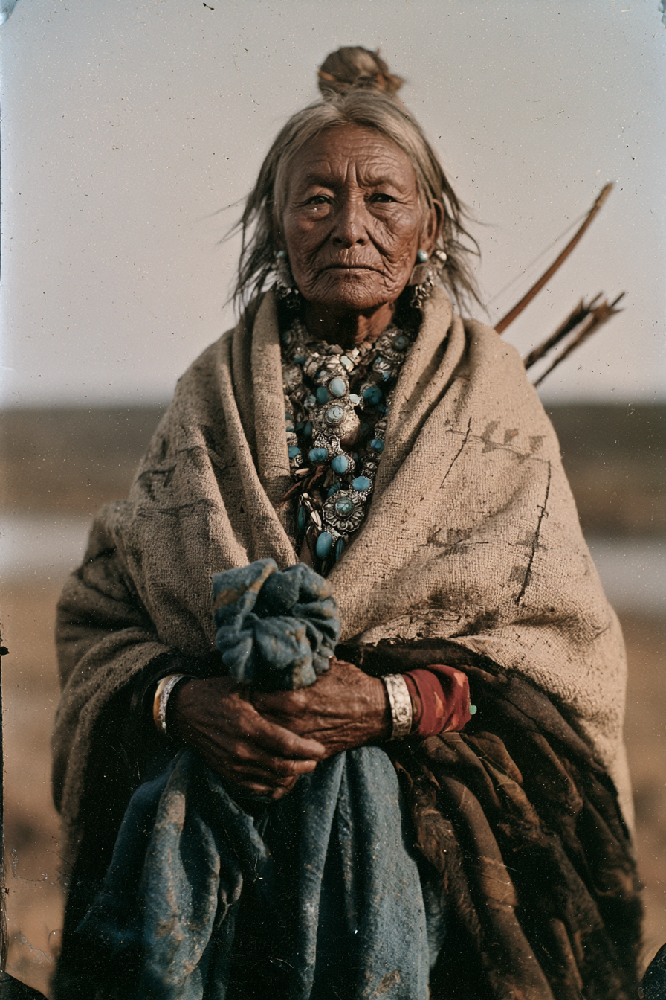

Archetyp: SHAMAN (Schamanen)
Diné (Navajo), geboren in Tódích’íi’nii, geboren für Kinyaa’áanii. Die Beamten in Fort Defiance trugen sie auf die Vermutung eines mexikanischen Händlers hin als „Lupe“ ins Register ein, und diesen Namen gibt sie Fremden, weil er sie nichts kostet.
Einundsechzig Jahre alt — und in jedem einzelnen der letzten zwanzig Jahre ist sie zum Fluss zurückgekehrt und hat etwas herausgetragen.
| Agility | d4 | 0 |
| Smarts | d8 | 2 |
| Spirit | d8 | 2 |
| Strength | d4 | 0 |
| Vigor | d6 | 1 |
| Skill | Attr. | Die | Pts. |
|---|---|---|---|
| Faith | Spi | d8 | 3 |
| Healing | Sma | d8 | 3 |
| Survival | Sma | d8 | 3 |
| Notice | Sma | d8 | 2 |
| Riding | Agi | d6 | 3 |
| Persuasion | Spi | d6 | 1 |
| Common Knowledge | Sma | d6 | 1 |
| Fighting | Agi | d4 | 1 |
Hintergrund. Sie war neunzehn, als die Soldaten die Pfirsichbäume im Canyon de Chelly verbrannten und ihr Volk dreihundert Meilen ostwärts nach Bosque Redondo trieben. Vier Jahre am Pecos: Alkaliwasser, Würmer in der Maisration und ein Bestattungsdienst, der nie aufhörte — und dort, nicht in den Chuskas, antwortete ihr zum ersten Mal etwas, und es war keines der ihren. Sie kam ’68 mit dem Webstuhl ihrer Mutter und einer Schuld nach Hause und bedient diese Schuld seither jedes Jahr, still, während sie Schafe und drei Enkel im Schatten eines Vertrags großzieht, den in Washington niemand mehr liest. In diesem Frühjahr wurde der Enkel ihrer Schwester bei einem Überfall aus dem Chinle-Wash verschleppt und in einen neumexikanischen Haushalt verkauft — der Handel mit Diné-Gefangenen, den der Vertrag hätte beenden sollen und nicht beendet hat. Sie hat außerhalb der Reservation keinen Rechtsstand, kein nennenswertes Englisch und keine Zeit. Also ging sie zum Handelsposten und suchte den einen Mann im Territorium, der ihr noch sein Leben schuldet, und er brachte Freunde mit.
Build. Geschicklichkeit W4, Verstand W8, Willenskraft W8, Stärke W4, Konstitution W6 · Bewegung 5, Parade 4, Robustheit 5, 15 MP Glaube W8, Heilen W8, Überleben W8, Bemerken W8, Reiten W6, Überreden W6, Allgemeinwissen W6, Kämpfen W4 (12 + 5 Fertigkeitspunkte aus Betagt) Talente: Arcane Background (Shaman) (Arkaner Hintergrund (Schamane)), Fetish (Fetisch — Glaube W8+, Gratis-Neuwurf auf jede Glaube-Probe), Healer (Heiler) Handicaps: Elderly (Alt) — Major: −1 Bewegung und Laufwürfel, −1 auf Geschicklichkeit, Stärke und Konstitution; +5 Fertigkeitspunkte. Sie ist alt, und das Buch bezahlt dich dafür. · Oath of the Old Ways (Eid auf die Alten Bräuche) — Minor: ihr bestes einzelnes mechanisches Gut, und Geisterstein schaltet es für eine volle Woche ab, nicht nur für einen Tag · Vow (Schwur) — Minor: die jährliche Rückkehr an den Pecos Mächte: Heilung, Linderung Ausrüstung: Pferd, handgenähter Sattel, Bogen und zwanzig Pfeile, Messer, Kochtopf, Wasserschlauch, zwei selbstgewebte Decken, rund 50 Dollar in Pfandsilber und Türkis — an jedem Handelsposten echte Währung. Ihr Fetisch ist ein Fetzen blauer Armeedecke, zu einem Bündel geknotet, und was darin ist, zeigt sie niemandem: ein verbogenes Bajonett, ein Hufnagel, dreieinhalb Meter Telegrafendraht, ein Messingknopf und andere Dinge — alle aus demselben Fluss gezogen.
Aufhänger — der Handel. Der Geist ist der Pecos bei Bosque Redondo, und er ist krank. Er war schon krank, als sie ihm begegnete: voller Alkali, voller Gräber in seiner Uferböschung, voll mit den Hinterlassenschaften von viertausend hungernden Gefangenen und dem Fort, das sie bewachte. Er hielt ihre Mutter und zwei ihrer Brüder vier Jahre am Leben. Der Preis, den er nannte, ist dieser: jedes Jahr, zur selben Jahreszeit, kommt sie zurück und trägt eine Sache aus dem Wasser, die nicht dorthin gehört, und begräbt sie in trockenem Boden fern von jedem Wasser. Zwanzig Jahre, zwanzig Gegenstände, und sie war nie zu spät. Das Tabu, das ihn bricht: sie darf niemals zulassen, dass fließendes Wasser etwas von ihr fortträgt. Sie wäscht sich nicht in Flüssen. Sie lässt kein Blut in einen Bach fallen. Sie sitzt an jeder Furt ab und trägt ihre Ausrüstung auf dem Rücken hinüber, statt die Strömung auch nur einen Faden nehmen zu lassen. Eine Posse in Eile wird das lange vor dem Heiligen als zermürbend empfinden. Was gerade schiefgeht: dieses Jahr zog sie ein faustgroßes Stück Geisterstein aus dem Pecos, und es gibt keine Ader im Umkreis von zweihundert Meilen. Sie begrub es. Es blieb nicht begraben. Und die letzte Anweisung des Flusses, vor zwanzig Jahren gesprochen und seither unverändert, lautete, dass in einem Jahr das, was sie herausträgt, kein Gegenstand sein wird.
Warum es Spaß macht. Du bist der Grund, warum die Posse noch lebt, und du bist der Grund, warum sie drei Tage im Rückstand ist, weil du diesen Bach nicht zu Pferd überquerst. Sie zu spielen heißt, die kompetenteste Person am Tisch zu sein, die konsequent das Unpraktischste tut, aus Gründen, über die sonst niemand abstimmen darf.
Regelgrundlage: Regelnotizen · Archetyp-Notizen